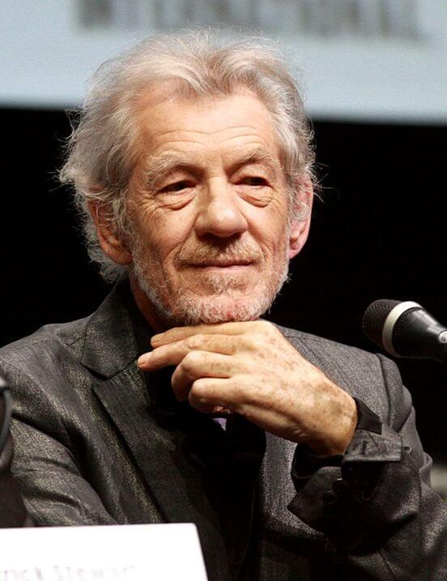

-
Antigone
Emily Blunt
Actress known for her work in film such as Academy Award nominee Sicario and Edge of Tomorrow leads the cast.
-
Creon
Idris Elba
Critically acclaimed film and TV actor credited in titles such Luther and Netflix's laudedBeasts of No Nation
-
Haemon
Donald Glover
Stage artist performer with TV credits in the shows Community and FX series Atlanta. Film credits include Spider-Man: Homecoming and Disney's upcoming The Lion King
-

Ismene
Uma Thurman
Acress recognized for her work in films such as Pulp Fiction, Kill Bill Vol. 1 & 2. This production marks her second theatrical appearance after her Broadway debut in "The Parisian Woman"
-
Polynices
Cillian Murphy
Film and TV actor, notable in roles like Christopher Nolan's Inception and the latest release Dunkirk. Also stars in the show Peaky Blinders.
-
Eteocles
Oscar Isaac
Actor recognized for his work in films such as Academy Award winning Ex Machina and the latest installments of the Star Wars franchise.
-

Oedipus & Tiresias
Sir Ian McKellen
Critically acclaimed actor in films such as the Lord of the Rings trilogy, several X-Men titles, with many theatrical credits to his name including "King Lear" and "Richard III"
-
Chorus
YOU!
Enjoy a unique experience as we invite you to join the members of the chorus for an (optional) immersive theatrical experience that brings you closer to the tragedy unfolding before your eyes.